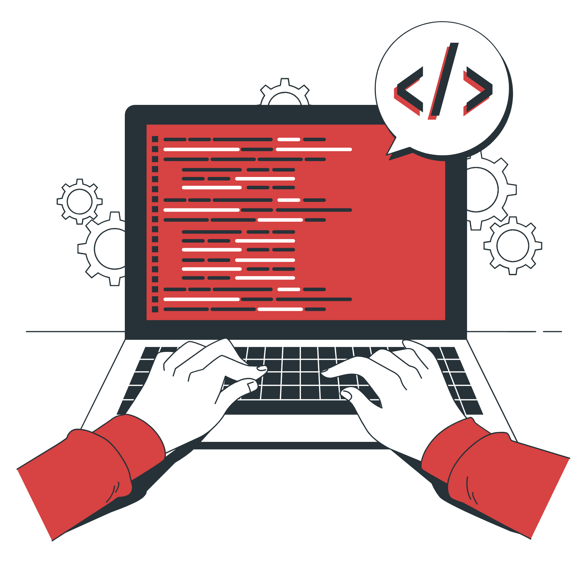

Sobre nós
Aqui voce encontra as melhores dicas sobre o desenvolvimento WEB, guia para iniciantes, tabelas atualizadas do mercado etc. Alem disso, aqui voce coloca tudo em pratica de acordo com a tebela de aulas fornecidas gratuitamente em nosso outro site.